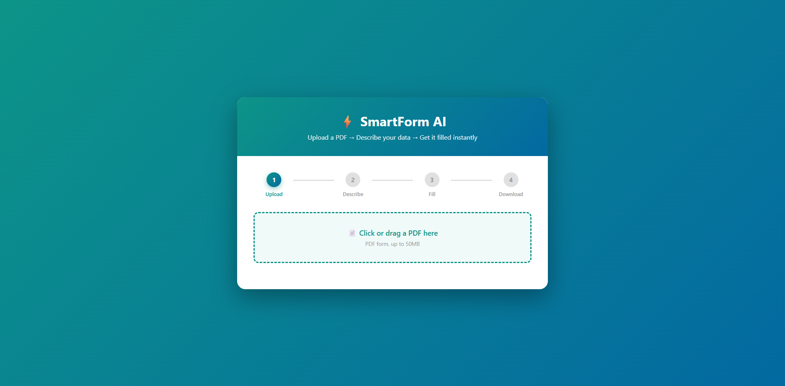
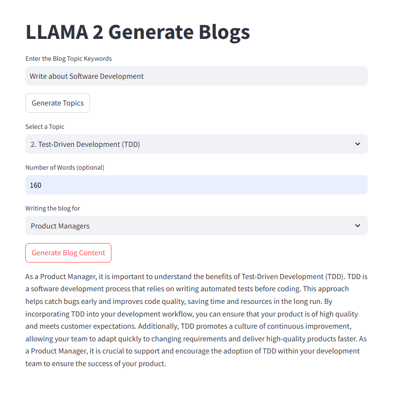
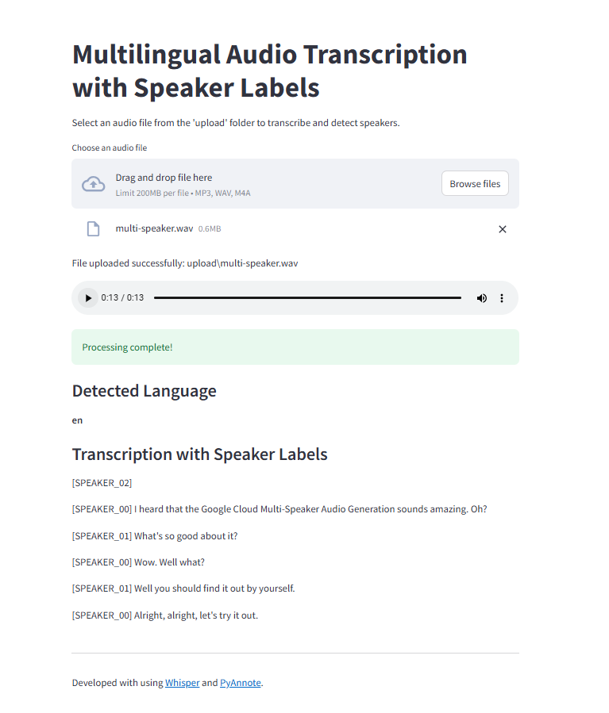
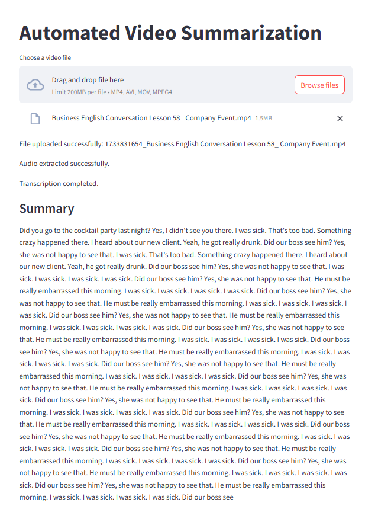
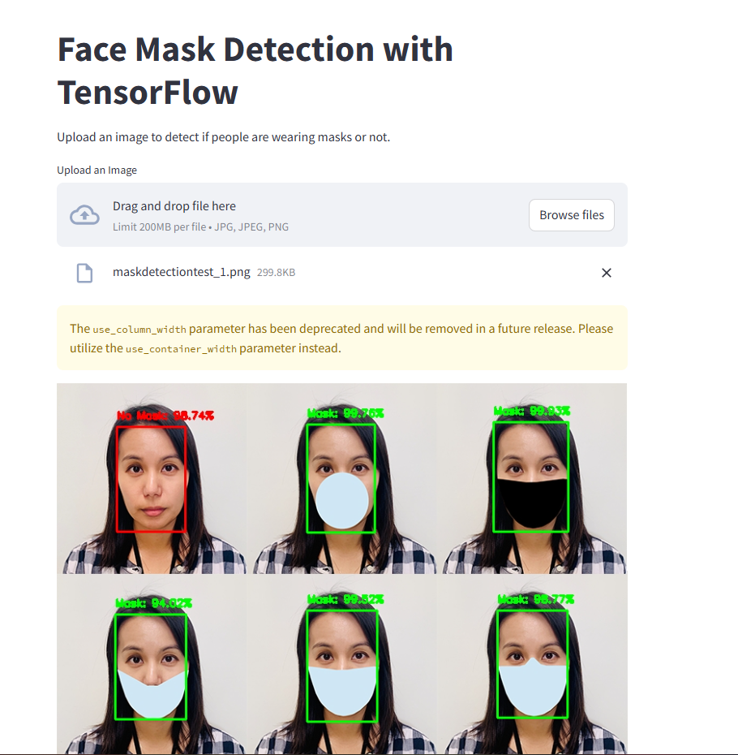
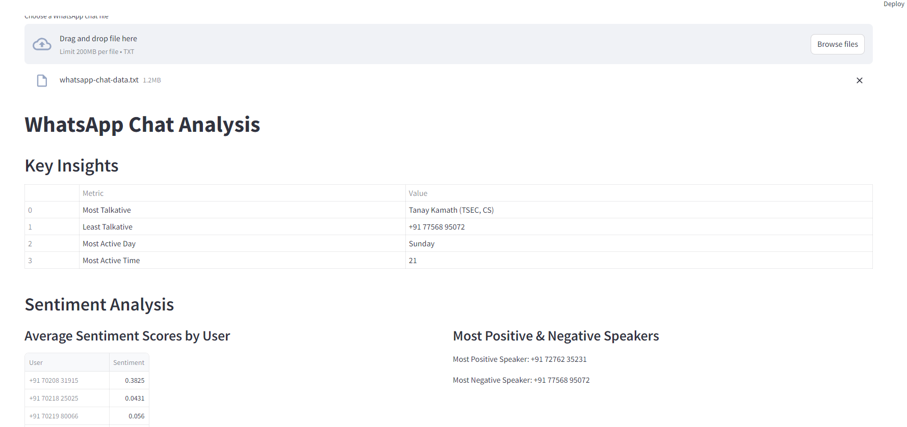

Senior Technical Lead · AI/ML Engineer
Hi, I'm Karthiyayini Muthuraj
I build production AI systems — RAG platforms, LLM pipelines and NL-to-SQL engines — backed by 15+ years shipping enterprise software as a technical lead.
About

From Full-Stack Engineering to Applied AI
Technology professional with 15+ years building production software, now specialized in applied AI. I currently design and ship AI systems for enterprise clients: a RAG-based knowledge platform for the healthcare domain, a natural-language-to-SQL reporting engine, and a document-AI pipeline that auto-fills any PDF form. My full-stack and cloud background (Laravel, React, AWS, GCP, Azure) means I don't stop at the model — I deliver the API, the pipeline, the infrastructure and the product around it.
Skills
AI & Data
Cloud & Backend
Web Development
Databases
Projects
Client Projects — production systems built for enterprise clients
BloomifAI — RAG Knowledge Platform
About the application
AI assistant platform for the healthcare and core enterprise domains. Teams upload documents and connect their data sources, then chat with that knowledge in natural language, auto-generate reports with charts, ask questions over tables, summarize meetings and let AI fill out forms — all grounded in their own data, not the model's imagination.
Technical highlights
- Three-service backend: FastAPI REST API (auth, teams/permissions, WebSockets for live chat), stateless Redis-queued LLM workers, and a pure LLM pipeline library — cleanly separating product logic from AI logic
- RAG done properly: Qdrant vector search, recursive & semantic chunking strategies, and a hallucination validator that checks every answer against retrieved sources before it reaches the user
- Table/SQL question-answering via the WAII SDK, so users can ask natural-language questions over structured data sources, not just documents
- Multi-provider LLM layer orchestrated with LangChain — Azure OpenAI / OpenAI in production, local Ollama for dev — so the platform is never locked to one model vendor
- Sentence-transformer embeddings on a PyTorch/CUDA runtime; PostgreSQL + MongoDB persistence, Azure Blob storage, Dockerized deploys and LLM tracing/eval with Opik
Izzy AI — Natural Language to SQL Reporting
About the application
Self-service reporting engine: business users type a question in plain English — "top 10 customers by revenue last quarter" — and get the answer as data. Behind the scenes it generates the SQL, runs it against the warehouse and returns the report. No SQL knowledge, no waiting on an analyst.
Technical highlights
- Text-to-SQL generation with OpenAI GPT-4o (cloud) or Ollama (local/private) — provider switchable by config, so cost, privacy and accuracy can be traded per deployment
- Trained with the Vanna AI SDK on 82 curated question→SQL examples in YAML plus complete schema context, giving the LLM full awareness of tables and columns before it writes a query
- Semantic query caching in Qdrant — similar questions hit the cache instead of the LLM, achieving a 70–80% hit rate and cutting both latency and API cost
- Sync and async APIs with Redis/RQ job processing; multi-tenant by design; runs against MySQL (transactional) and ClickHouse (analytics) backends
Open Source & Demos

SmartForm AI — Intelligent PDF Form Filler
Fills any PDF form from a plain-English description. Converts static PDFs to fillable, labels fields with Azure Document Intelligence, then GPT-4o maps natural-language input onto the right fields.

AI Blog Generator
LLM-powered app that generates full blog posts from a single topic prompt.

Audio Transcription & Speaker Diarization
Transcribes speech and identifies distinct speakers within audio recordings.

Automated Video Summarization
Deep learning pipeline that condenses long-form video into key-moment highlight reels.

Face Mask Detector
Real-time CNN classifier that detects mask usage in video streams using TensorFlow and OpenCV.

WhatsApp Chat Analytics
Parses exported chat logs to surface sentiment, activity trends and word-usage stats.
Work Experience
ConcertIDC - Senior Technical Lead
January 2022 – Present
Chennai, Tamil Nadu, India
- Building AI systems for enterprise clients: a RAG-based knowledge platform for the healthcare domain (LangChain, Qdrant, Azure OpenAI) and Izzy AI, a natural-language-to-SQL reporting engine with semantic caching over MySQL/ClickHouse.
- Developed SmartForm AI, a document-AI pipeline that converts static PDFs to fillable forms and populates them from natural-language input using Azure Document Intelligence and GPT-4o.
- Led the development of the "Innovazone" product, incorporating innovative features to address complex business challenges.
- Upgraded frameworks by migrating from Laravel 5 to Laravel 8 and from Angular 2 to React.js, improving performance and maintainability.
- Designed and implemented proof-of-concept platforms utilizing APPSync, GraphQL, and MFA authentication to enhance scalability and security.
- Developed device integration solutions using Python frameworks for advanced scanning capabilities, streamlining operations and increasing efficiency.
International Development Connection - Senior Technical Lead
March 2020 - January 2021 (11 months)
Chennai, Tamil Nadu, India
- Collaborated directly with stakeholders and clients to develop the "Innovazone" project.
- Upgraded frameworks from Laravel 5 to Laravel 8 and transitioned from Angular 2 to React.js.
- Worked on proof-of-concept platforms, including APPSync, GraphQL, SAML, and MFA authentication.
KnackForge - Technical Lead (Full Stack Laravel Developer)
June 2018 - June 2019 (1 year 1 month)
Chennai, Tamil Nadu, India
- Enhanced infrastructure and code quality for multi-tier web systems.
- Developed scalable applications using unit-testable methods and conducted code reviews.
- Coached and mentored a team of eight developers.
- Provided project updates, identified risks, and proposed solutions to the management team.
- Evaluated and recommended architecture for P2P systems to ensure architectural integrity.
- Participated in sprint planning, execution, retrospectives, and backlog grooming.
OptiSol Business Solutions - Full Stack Technical Lead
February 2016 - March 2018 (2 years 2 months)
Madurai, Tamil Nadu, India
- Defined project requirements with clients and BAs.
- Managed a team of four, overseeing task distribution and work schedules.
- Participated in recruitment and coordinated team efforts to meet project goals.
- Supervised code reviews and ensured quality standards.
Invigor Group - PHP Web Developer
August 2014 - January 2016 (1 year 6 months)
Chennai, Tamil Nadu, India
- Collaborated with offshore teams and senior technical leaders to effectively communicate and align with business requirements.
- Developed complex logic-driven programs using frameworks such as CodeIgniter, Laravel, Angular, and Vue.js as part of a four-person team.
- Utilized Google GPS navigation systems in a project for the Austrian government, demonstrating adaptability to new technologies.
UDeserve Technologies - PHP Developer
May 2011 - July 2014 (3 years 3 months)
Madurai, Tamil Nadu, India
- Collaborated with programmers, designers, and developers to create new software applications and programs.
- Developed programming scripts to enhance the performance and functionality of business applications.
- Analyzed and resolved technical issues, demonstrating strong problem-solving skills.